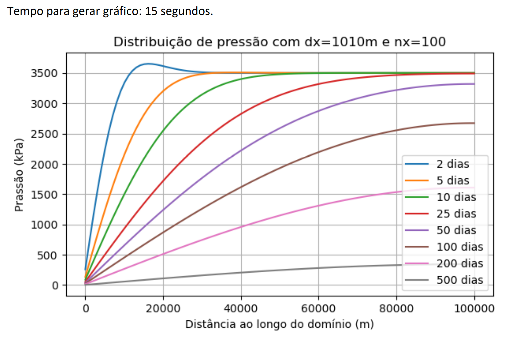
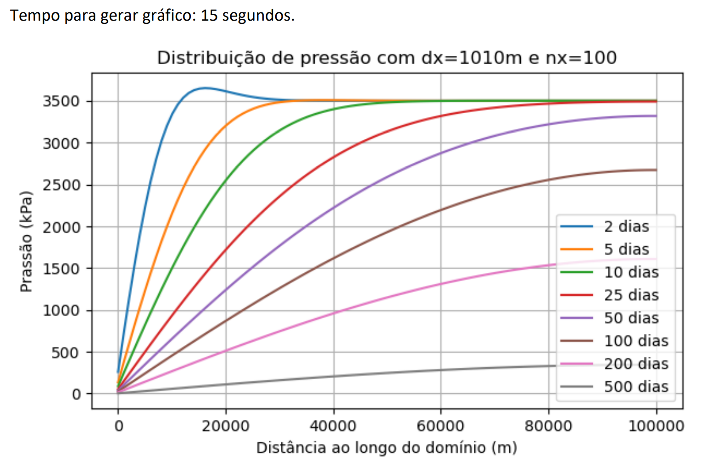

Simulação de Reservatórios de Petróleo
Modelagem computacional do comportamento de reservatórios de petróleo, utilizando Python e C++ para análise e otimização de processos.

O escoamento multifásico ocorre em diversas aplicações de interesse em indústrias, como por exemplo, a petrolífera. Ele é típico já nos reservatórios portadores de hidrocarbonetos, sendo que a modelagem acurada é importante na tomada de decisão sobre cenários de operação que levem a um aumento do fator de recuperação de óleo e gás. Devido à não linearidade das equações governantes dos escoamentos nos reservatórios, a simulação numérica surge como uma ferramenta sobremaneira relevante para a indústria do petróleo.
Fluxo multifásico
O fluxo multifásico é caracterizado pelo movimento de diferentes fases, como
gás, líquido e sólido, podendo incluir mais de uma fase líquida. Esse fenômeno é
essencial em processos industriais e na extração de recursos naturais, sendo aplicado,
por exemplo, no fluxo de carvão-biomassa em usinas de energia, gás-água em células
de combustível, gás-líquido em reatores de coluna de bolhas e óleo-gás-água-sólido
em reservatórios de petróleo e gás (CAI et al., 2024).
Comparado ao fluxo monofásico, o fluxo multifásico é mais complexo devido
às interações entre os fluidos e com o meio poroso. Em um escoamento multifásico
em meio poroso, cada fase possui uma saturação e uma pressão específicas, que
variam ao longo do tempo e do comprimento do meio. Essa complexidade depende
das características físicas do meio, dos fluidos e do potencial de fase (CAI et al., 2024;
LAKE; FANCHI, 2006).
Na extração de hidrocarbonetos, o meio poroso, composto por diferentes minerais,
apresenta variabilidade na permeabilidade e porosidade. A geometria complexa
dos poros nas rochas torna difícil prever o comportamento dos fluidos com equações
tradicionais da mecânica dos fluidos, como as equações de Navier-Stokes, exigindo
abordagens alternativas. Entender o fluxo multifásico em meios porosos é essencial
para otimizar a produção em reservatórios de petróleo (CAI et al., 2024).
Reservatório de Petróleo
Apesar das diferentes formas de se obter energia e do aumento da eficiência
de várias fontes energéticas, a demanda global continua a crescer, de modo que a
produção atual de hidrocarbonetos não está sendo suficiente para atendê-la. Em 2023,
a demanda global por petróleo atingiu seu maior valor histórico, com um consumo de
13.88 M ton/dia. Melhorar a recuperação de hidrocarbonetos e utilizar recursos
não convencionais é essencial para atender essa demanda crescente (WANG et al.,
2024).
O petróleo é comumente encontrado em uma matriz rochosa permeável, em
espaços chamados poros, formando o que se conhece como reservatório de petróleo.
Em um reservatório, é importante avaliar o comportamento multifásico, pois o petróleo é
frequentemente encontrado misturado com gases e água. As propriedades dos
fluidos envolvidos, como viscosidade e densidade, combinadas com a geometria do
meio poroso, influenciam a movimentação dos fluidos e a eficiência do processo de
extração. Por exemplo, a presença de água ou gás pode alterar significativamente
a pressão e a saturação do óleo no reservatório, resultando em um comportamento
complexo que demanda abordagens especializadas para a análise e otimização da
produção. A compreensão desses efeitos é vital para o desenvolvimento de tecnologias que
promovam uma recuperação eficaz de petróleo (LAKE; FANCHI, 2006).
Nos estudos de reservatórios de petróleo, a lei de Darcy, juntamente com a
equação de continuidade, são as ferramentas mais consolidadas e utilizadas. A lei
de Darcy utiliza propriedades da rocha e do fluido e introduz o conceito de permeabilidade,
estabelecendo uma relação linear entre a velocidade de Darcy (velocidade
média do fluxo) e o gradiente de pressão (ou potencial de fase). A lei de Darcy tem sido
o princípio fundamental na análise de processos de fluxo em meios porosos. Qualquer
desvio dessa relação linear pode ser definido como fluxo não-Darcy (WU et al., 2011).
Fluxo não-Darcy
A produção de petróleo apresenta muitos desafios do ponto de vista da análise
física, pois a lei de Darcy, que vem sendo usada para descrever o fluxo em reservatórios
de petróleo, não descreve toda a gama de condições de extração de hidrocarbonetos.
Existem casos em que o fluxo volumétrico é muito grande ou muito pequeno,
e a lei de Darcy não apresenta uma boa descrição do fenômeno. Os casos em que
existe fluxo não-Darcy de alta velocidade ocorrem em regiões de poços de injeção,
poços de extração, regiões no reservatório com rachaduras naturais, em reservatórios
de xisto com extração por fraturamento, e em regiões com alto gradiente de pressão e
alta permeabilidade (WU et al., 2011).
Para a análise de fluxo não-Darcy imiscíveis em meios porosos, tem-se usado
exclusivamente a equação de Forchheimer (1901), que foi estendida também para
fluxo multifásico por Evans (1987). A fim de melhorar os modelos de comportamento
do fluxo multifásico não-Darcy em meio poroso, Barree e Conway (2004), através de
resultados experimentais e observações de campo, propuseram um novo modelo físico que
não depende da suposição de uma permeabilidade constante ou de um fator
Forchheimer-𝛽 constante. Recentemente, foi demonstrado que o modelo de Barree
e Conway descreve toda uma região de taxa de fluxo e gradiente de potencial, de
baixas a altas taxas de fluxo em meio poroso, incluindo em zonas de transição. Especificamente,
este modelo respeita as zonas de fluxo Darcy, não-Darcy e regiões de
transição, superando as desvantagens do modelo de Forchheimer, que está restrito a
fluxos não-Darcy (WU et al., 2011).
Os modelos citados resultam em sistemas de equações não lineares que dificilmente podem
ser resolvidos de forma analítica, tornando necessário uma análise
numérica para determinar o comportamento do fluxo, da saturação e da variação de
pressão no reservatório ao longo do tempo. Com o modelo matemático definido, a
análise numérica torna possível construir um simulador das condições do reservatório
ao longo do domínio de tempo e espaço (WU et al., 2011).
Simulação numérica
Uma simulação numérica surge da necessidade de entender o comportamento
de fenômenos complexos da física, descritos por equações diferenciais que muitas vezes
não possuem solução analítica. A partir de um modelo físico, utilizam-se técnicas
de discretização, que transformam uma equação com derivadas espaciais e temporais
em um sistema de equações acopladas que podem ser resolvidas por computadores.
É essencial garantir que haja convergência numérica, ou seja, que os resultados obtidos
se aproximem da solução exata à medida que a discretização se torna mais fina,
e que o método numérico esteja adequado ao poder computacional disponível. Com
isso, é possível calcular grandezas importantes ao longo do tempo e distribuídas no
espaço (DRUETTA et al., 2016).
Partindo de uma equação diferencial, as derivadas são discretizadas, transformando uma
equação não linear em um sistema de equações lineares que precisa ser
resolvido iterativamente por um programa de computador. O número de equações a
serem resolvidas é determinado pelo projetista da simulação, com base na necessidade de
resolução do problema. Essa resolução é chamada de malha. Quanto mais
refinada a malha (isto é, quanto menor o tamanho dos elementos da malha), maior
será o número de equações a ser resolvido. No caso de equações que dependem de
variáveis temporais e espaciais, é necessário definir duas malhas: uma para o tempo
e outra para o espaço, de modo a calcular todas as variáveis em cada ponto espacial
para cada instante de tempo (DRUETTA et al., 2016).
Com base nos cálculos realizados na malha, é possível prever o comportamento de grandezas
importantes, como a variação de pressão em um reservatório ao
longo do tempo ou a variação de saturação de fluidos no caso de escoamento multifásico.
Essa análise é importante para justificar e avaliar os investimentos em exploração
e produção de petróleo. Além disso, determinar o comportamento futuro do reservatório de
petróleo é essencial para otimizar a produção e para implementar técnicas de
recuperação avançada de petróleo (DRUETTA et al., 2016).
Assim, garantir a convergência numérica e escolher uma malha adequada são
aspectos fundamentais para obter resultados confiáveis, especialmente em aplicações
como a previsão do comportamento de reservatórios de petróleo, que orientam decisões estratégicas
na exploração e produção (DRUETTA et al., 2016).
Procedimento de Solução do Simulador
O objetivo aqui é desenvolver uma solução para as equações para o fluxo água óleo obtidas
no capitulo anterior. As equações de fluxo de fluido são um conjunto de
equações diferenciais parciais não lineares que devem ser resolvidas por computador.
As derivadas parciais são substituídas por diferenças finitas, que, por sua vez, são
derivadas a partir da série de Taylor. Aqui está uma breve descrição do procedimento:
Passo 1: Formule as equações de fluxo de fluido, como:
\(\hspace{1cm}\textbf{a.}\) Discretize a região em blocos de grade \(\Delta x\):
onde \(P_i\) e \(P_{i+1}\) são os valores de pressão nos nós \(i\) e \(i+1\).
\(\hspace{1cm}\textbf{b.}\) Discretize o tempo em passos de tempo \(\Delta t\):
onde \(S^n\) e \(S^{n+1}\) são os valores de saturação nos tempos \(n\) e \(n+1\).
Passo 3: Resolva numericamente o sistema resultante de equações algébricas lineares.O intervalo de diferença finita espacial \(\Delta x\) ao longo do eixo \(x\) é chamado de comprimento do bloco de grade (gridblock length), e o intervalo de diferença finita temporal \(\Delta t\) é chamado de passo de tempo (timestep).
Os índices \(i\), \(j\) e \(k\) são comumente usados para rotular as localizações da grade ao longo dos eixos coordenados \(x\), \(y\) e \(z\), respectivamente. O índice \(n\) rotula o nível de tempo atual, de modo que \(n+1\) representa um nível de tempo futuro.
Se as representações de diferença finita das derivadas parciais forem substituídas nas equações originais de fluxo, o resultado é um conjunto de equações que pode ser reorganizado algebricamente para formar um sistema de equações que pode ser resolvido numericamente. A solução dessas equações é a tarefa do simulador (FANCHI, 2006).
Atapa Atual
No relatório, foram desenvolvidas as equações para o fluxo de água e de óleo, que foram discretizadas. O resultado obtido foi o seguinte:
Modelo matemático para o fluxo de Óleo e Água
Para óleo temos:
\[ \frac{\partial}{\partial x}\left[T'_o \left(\frac{\partial p_o}{\partial x}\right) \right] = \phi \frac{\partial}{\partial t} \left(\frac{1-S_w}{B_{o}}\right) \]
E para água:
\[ \frac{\partial}{\partial x}\left[T'_w \left(\frac{\partial (p_o-P_{cow})}{\partial x}\right) \right] = \phi \frac{\partial}{\partial t} \left(\frac{S_w}{B_{w}}\right) \]
Onde
\[ T'_\beta = \frac{k_{\text{app}\beta}}{\mu_\beta B_\beta}. \]
equação após discretização
Para o fluxo de água:
\[ \begin{multline} \frac{\phi}{\Delta t} \left[ \frac{S_w^{n+1} - S_w^n}{B_w^n} + \frac{S_w^{n+1} c_w}{B_w^0} \left( p_o^{n+1} - p_o^n - P_{cow}^{n+1} + P_{cow}^n \right) \right] = \left( T_{w,i+1/2} (p_{o,i+1} - p_{o,i}) - T_{w,i-1/2} (p_{o,i} - p_{o,i-1}) \right) - \left( T_{w,i+1/2} (P_{cow,i+1} - P_{cow,i}) - T_{w,i-1/2} (P_{cow,i} - P_{cow,i-1}) \right) \end{multline} \]
Para o fluxo de óleo:
\[ \begin{multline} \frac{\phi}{\Delta t} \left[ \frac{c_o}{B_o^0} \left( p_o^{n+1} - p_o^n \right) - \left( \frac{1}{B_o^n} \left( S_w^{n+1} - S_w^n \right) + S_w^{n+1} \frac{c_o}{B_o^0} \left( p_o^{n+1} - p_o^n \right) \right) \right]= \left[T_{o,i+1/2} \left(p_{o,i+1} - p_{o,i}\right) - T_{o,i-1/2} \left(p_{o,i} - p_{o,i-1}\right)\right] \end{multline} \]
Contextualização do Trabalho
Este trabalho está em desenvolvimento e pasara pelas etapas de linearização, construção do codigo e resultados.Estudo de propriedades de reservatório de petróleo
Implementação de simulador de Escoamento em meio poroso bifasico pela lei de darcy - Simulação de Reservatórios de Petróleo
Aqui será apresentado um modelo implementado como parte das atividades da disciplina Simulação de Reservatórios de Petróleo. O simulador foi desenvolvido em Python e Tem como objetivo entender como a pressão evolui ao longo do comprimento do reservatorio e ao longo do tempo. Foi relizado o dimenssionamento da malhar com base na convergencia dos graficos de pressão. Foram variados as propriedades de rocha e fluido e principamente foi a avaliado a evolução da pressão com diferentes condiçoes de permeabilidade. considerando a heterogeneidade da permeabilidade utilizando um vetor que atribui variação de permeabilidade ao longo do reservatorio. O procedimento para obitenção das equação a seguir estão no documento.
Equação utilizadas
Lei de Darcy: \[ \vec{u} = - \frac{\overline{\overline{k}}}{\mu} \left( \nabla p - \rho g \nabla D \right) \]
Equação de continuidade:\[ -\nabla \cdot (\rho \vec{u}) + \frac{q_m}{V_b} = \frac{\partial (\phi \rho)}{\partial t} \]
Subistituindo Darcy na equação de continuidade e escrevendo para x:\[ \frac{\partial}{\partial x} \left( \rho \frac{k}{\mu} \frac{\partial p}{\partial x} \right) = \frac{\partial (\phi \rho)}{\partial t} \]
Resultado da discretização: \[ \Gamma_i^n (p_i^n) \frac{\Delta x^2}{ \Delta t} = - \left( p_{i+1}^{n+1} T_{i+\frac{1}{2}}^{n+1} \right) + p_i^{n+1} \left( T_{i-\frac{1}{2}}^{n+1} + T_{i+\frac{1}{2}}^{n+1} + \Gamma_i^n \frac{\Delta x^2}{ \Delta t} \right) - \left( p_{i-1}^{n+1} T_{i-\frac{1}{2}}^{n+1} \right) \]
Resultados
A equação obtida resolve a pressão de forma explicita para cada volume de controle em cada passo de tempo. A seguir o codigo que resolve a equação.Após a construção do código, foi realizada a verificação do tamanho dos blocos da malha. O procedimento consistiu em manter o tamanho do reservatório fixo e dividir o domínio em um número (\(n_x\)) de partes iguais (\(\Delta x\)), onde \(\Delta x\) representa o volume de controle finito utilizado na aproximação das derivadas.
Conforme o número de blocos (\(n_x\)) aumenta, o tamanho dos blocos diminui, o que, por sua vez, aumenta o número de equações a serem resolvidas. Nesse contexto, dois efeitos principais são observados: (1) o tempo de processamento do código aumenta, e (2) o resultado da curva se aproxima da curva real, definida pelas equações diferenciais.
No entanto, não há poder computacional capaz de resolver essas equações com \(n_x\) tendendo ao infinito e \(\Delta x\) tendendo a zero. Felizmente, isso não é necessário. À medida que \(\Delta x\) diminui, a curva se aproxima cada vez mais da curva real. Em cada etapa, é perceptível a mudança na forma e posição da curva. Contudo, em determinado ponto, as alterações tornam-se cada vez menos significativas.
Esse ponto marca o valor de \(\Delta x\) em que a mudança na curva é insignificante para os propósitos do trabalho. Nesse momento, é recomendável parar de reduzir \(\Delta x\) para economizar poder computacional e tempo de processamento. Abaixo, apresenta-se o resultado desse tipo de teste.
 

Entre \(n_x = 600\) e \(n_x = 300\), não foram observadas mudanças visíveis nos gráficos. Por esse motivo, decidiu-se utilizar \(n_x = 300\), uma vez que o tempo necessário para realizar os cálculos e gerar o gráfico é significativamente menor (40 segundos contra 180 segundos). Nesse caso, o valor de \(\Delta x\) corresponde a 334 m.
Efeitos da permeabilidade na pressão do reservatorio ao longo do tempo.
Permeabilidade fixada em 0.07𝜇m²
Foi utilizado um vetor com diferentes permeabilidades e uma interpolação linear variando a permeabilidade ao longo dos pontos do vetor. Assim é possivel fazer prospecçoes para avaliar a permeabilidade do reservatorio em cada ponto de prospequição e estimar que a variação de permeabilidade é linear em cada ponto.
Variando a permeabilidade decrescentemente ao longo do reservatorio (de 0.01𝜇m² até 0.1𝜇m²)
Variando a permeabilidade crescentemente ao longo do reservatorio (de 0.1𝜇m² até 0.01𝜇m²)
Nesta parte do trabalho sera variado diversas propriedades de rocha e fluido para um mesmo intervalo de tempo, afim de entender como esta propriedades modificam a pressção no reservatorio ao longo do dominio.
Os scripts apresentados a seguir neste trabalho precisan ser executados apos o primeiro codigo apresentado.
Diferentes permeabilidades em 25 dias
Interpretação física:
Neste gráfico, é fácil observar que, quanto maior a permeabilidade, maior é a queda de pressão no mesmo intervalo
de tempo, ou seja, a pressão diminui mais rapidamente. Isso está de acordo com o esperado, e a explicação para o fenômeno é a seguinte:
A força motriz para o fluxo do fluido no reservatório é a diferença de pressão, ou, em outros termos, a energia capaz de movimentar o fluido é a energia potencial associada à pressão do reservatório. À medida que o fluido escoa, a pressão no reservatório diminui, indicando que a energia potencial está sendo "consumida". Quanto maior o fluxo, maior é a potência demandada, o que resulta em uma redução mais acentuada da pressão no mesmo intervalo de tempo.
Agora, observando a definição de permeabilidade ou pela Lei de Darcy, sabemos que a permeabilidade é diretamente proporcional ao fluxo. Portanto, com o aumento da permeabilidade, espera-se uma maior redução da pressão no reservatório para o mesmo intervalo de tempo.
Diferentes porosidades em 25 dias
Interpretação física:
A porosidade é uma medida relativa de volume que representa a capacidade do reservatório de armazenar fluido. A redução da energia potencial do
reservatório está diretamente relacionada à quantidade de fluido armazenado, já que essa energia depende da pressão exercida pelo fluido.
Assim, um reservatório com menor porosidade possui menos capacidade de armazenamento de fluido, resultando em uma energia potencial mais baixa.
Consequentemente, a pressão no reservatório diminui mais rapidamente em reservatórios de menor porosidade.
Diferentes viscosidades em 25 dias
Interpretação física:
Viscosidade é uma propriedade física dos fluidos que mede sua resistência ao escoamento ou deformação. Em termos simples, é uma medida do atrito
interno do fluido. Quanto maior a viscosidade, mais difícil é para o fluido se mover ou fluir. Assim, é esperado que, em um reservatório, quanto
maior a viscosidade do fluido, mais lentamente a pressão do reservatório diminua, já que a movimentação do fluido é reduzida.
Diferentes compressibilidades do fluido em 25 dias

Interpretação física:
No gráfico de escoamento em meio poroso, observa-se que, no mesmo intervalo de tempo, a redução de pressão é mais significativa nos casos em que a
compressibilidade do fluido é menor. Esse comportamento pode ser explicado com base na física do fenômeno:
A compressibilidade de um fluido representa sua capacidade de reduzir o volume sob uma dada pressão. Fluídos com baixa compressibilidade sofrem
pequenas variações de volume mesmo quando submetidos a grandes pressões. Em um reservatório de petróleo, a força motriz para o escoamento é a
diferença de pressão entre as regiões do reservatório. Quando a compressibilidade é baixa, o fluido armazena menos energia na forma de compressão.
Assim, à medida que o fluido escoa, a pressão do reservatório diminui mais rapidamente, pois a energia potencial armazenada no fluido não é
suficiente para sustentar a pressão de forma prolongada.
Esse comportamento está alinhado com o gráfico apresentado, que demonstra que reservatórios contendo fluidos com menor compressibilidade experimentam
uma maior queda de pressão no mesmo intervalo de tempo. Esse fenômeno reflete o papel crucial da compressibilidade na dinâmica de pressão e escoamento
em reservatórios porosos.
Diferentes compressibilidades da rocha em 25 dias
Interpretação física:
O gráfico mostra que a redução de pressão é mais acentuada em rochas com menor compressibilidade. Assim como ocorre com fluidos, rochas menos
compressíveis armazenam menos energia na forma de deformação elástica, o que resulta em uma queda de pressão mais rápida no reservatório poroso. No
entanto, essa variação foi usada no gráfico apenas como teste para analisar os efeitos da compressibilidade, pois, na prática, rochas com alta
compressibilidade são raras. Por isso, esse efeito pode ser desconsiderado em muitos estudos de escoamento.